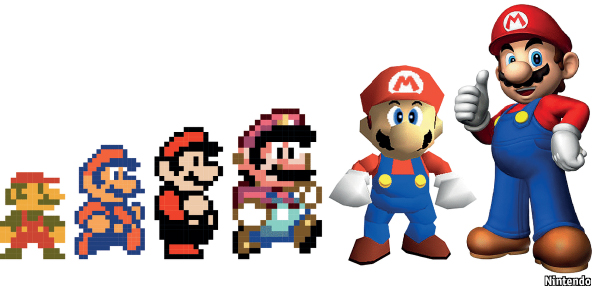
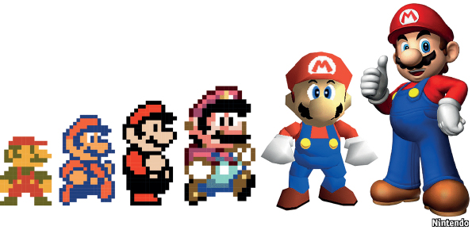
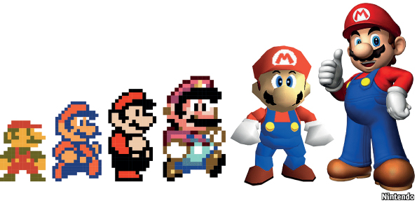

Mario's Photos

 

Mario is depicted as a short, pudgy, Italian plumber who resides in the Mushroom Kingdom, his adventures generally center upon rescuing Princess Peach from the Koopa villain Bowser. (With his fraternal twin brother and sidekickl, Luigi.) He wears a longsleeved red shirt, a pair of blue overalls with yellow buttons, brown shoes, white gloves and a red cap with a red "M" printed on a white circle. In the television series and film, Mario and Luigi are originally from Brooklyn, New York. Little is known of Mario's childhood Miyamoto stated that Mario's physical age was about 24–25 years old. Mario uses items, which give him various powers, and differ between the games he is in. Other Mario genres include the Mario Kart racing series, sports games such as the Mario Tennis and Mario Golf series, branched into several media, including television shows, film, comics. Nintendo company's mascot
created by Japanese video game designer Shigeru Miyamoto
unnamed in the Japanese release. named "Jumpman" in the game's English instructions and Mario in the sales brochure. Miyamoto originally named the character "Mr. Video". in the end he was named after Nintendo of America's warehouse landlord Mario Segale.
